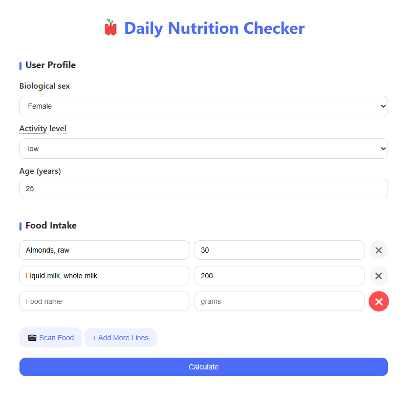
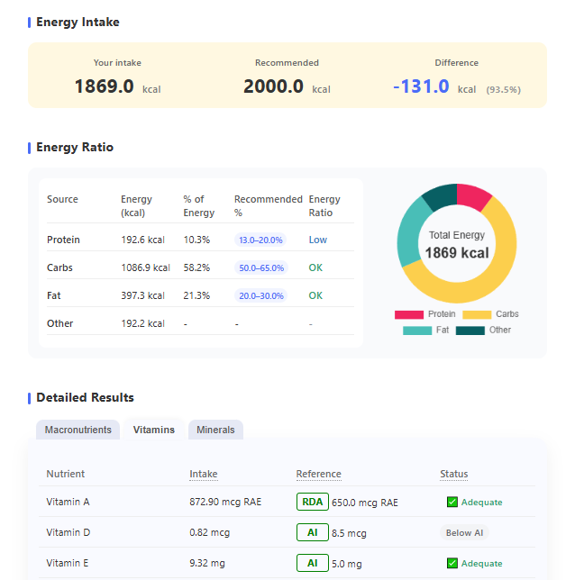
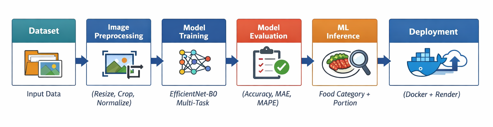
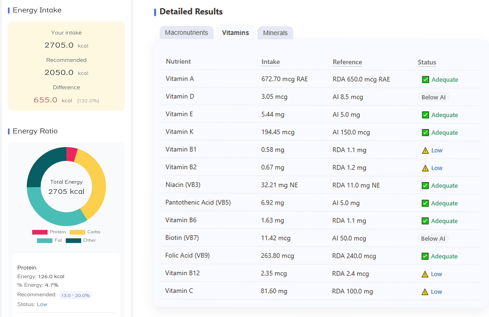

Daily Nutrition Checker
A Data-Driven Nutrition Analysis Web Application with ML inference
Overview
Daily Nutrition Checker is a Flask-based web application with ML inference, deployed using Docker and Hugging Face Spaces.
The application transforms daily food intake data into structured nutritional insights for analysis and evaluation, helping users better understand dietary balance and nutritional adequacy.
The interface is responsive and supports desktop, tablet, and mobile devices.

Core Functionality
- Calculate total daily energy intake from user-entered food data
- Break down energy contribution by macronutrients (protein, carbohydrates, fat)
- Compare actual intake against recommended energy ranges
- Evaluate intake levels and status for:
- Macronutrients
- Vitamins
- Minerals

Data & Methodology
Nutritional calculations are based on:
- Dietary Reference Intakes for Japanese (2020)
- Standard Tables of Food Composition in Japan (2015)
Food composition data and reference values are organized into normalized datasets.
Modular project structure separating:
- Data loading
- Nutritional calculations
- Evaluation logic
- Presentation layer
Data-driven logic with explicit calculation and comparison rules
Machine Learning Model
To simplify food logging, a computer vision model was integrated to automatically recognize food categories and estimate portion size from images.

The model was trained on the ECUST Food Dataset (ECUSTFD), which contains multi-angle food images with reference objects for size estimation. The model predicts 13 food categories and estimates portion weight.
Training performance on the dataset achieved approximately 99% accuracy for food category recognition and a portion estimation MAE of 24 g.
Current Limitations
- Portion estimation based on image area is inherently noisy. Even when reference objects such as coins or plates are present, estimating weight from inferred volume can be inaccurate. For example, in the ECUSTFD dataset, apples with similar volumes (~300 cm³) have weights ranging from 234 g to 255 g.
- Although the ECUSTFD dataset includes multiple viewing angles and reference objects, the visual scenes are relatively simple. As a result, the model performs well during training but shows lower accuracy when applied to real-world images with more complex backgrounds or mixed dishes, indicating limited generalization ability.
Future Development
● Application Improvements
- When prediction confidence is below 80%, provide the top three predicted food categories for user selection.
- Extend nutritional analysis to support infants and children under 6 years old.
- Add multilingual support for broader accessibility.
● Machine Learning Directions
- Automatically generate daily dietary summaries and nutritional recommendations based on the analyzed intake data.
- Ingredient-level recognition: identify ingredients within a dish and estimate their relative proportions. This would enable more accurate nutrition estimation by combining ingredient detection with regional food composition tables and Dietary Reference Intakes (DRIs).
Demo & Visuals

Open Live Demo ›
Acknowledgements
- The authors of the ECUST Food Dataset for providing the dataset used in model training.
- The creator of the small robot icon used in the interface.